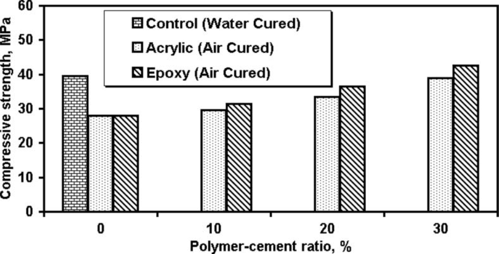
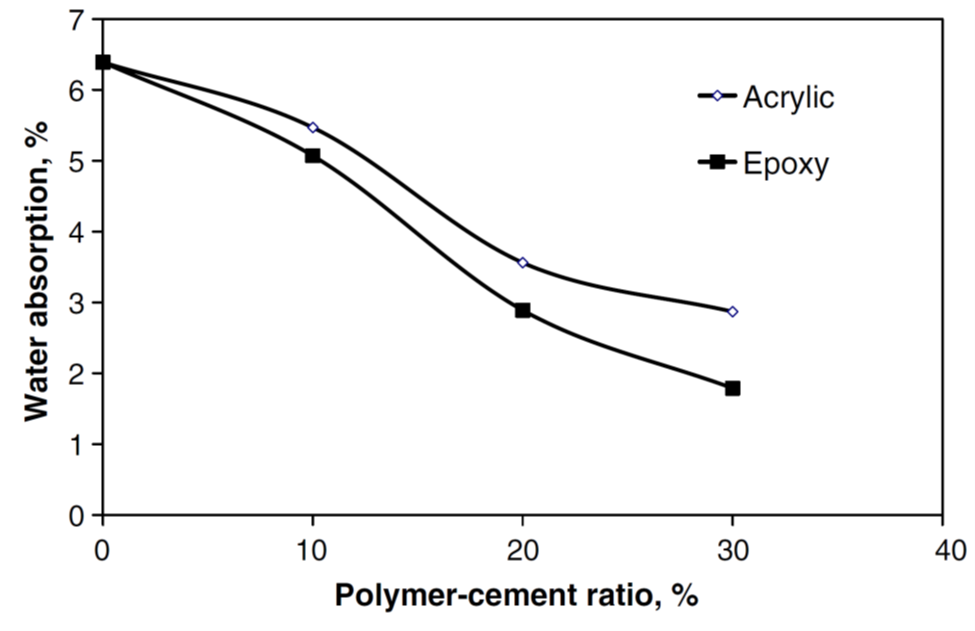

لاتکس های پلیمری جدید و نقش آنها در بتن و ملات های سیمانی
لاتکس های پلیمری جدید و نقش آنها در بتن و ملات های سیمانی
نقش پلیمر ها در بتن روز به روز در حال افزایش است. پلیمرهایی که در بتن های پلیمری استفاده می شوند، شکل ها و انواع مختلفی دارند. پلیمرها به صورت لاتکس، مذاب یا حتی پودر در بتن استفاده می شوند. آنها می توانند ترموست یا ترموپلاست باشند یا حتی پایه حلال یا پایه آب یا خالص.
عمده پلیمرهایی که جهت آب بندی بتن و ملات استفاده می شوند پایه لاتکسی دارند. لاتکس های پلی وینیل استات، اکریلیک، کوپلیمرهای وینیل استات -اتیلن، استایرن-بوتا دی ان و استایرن اکریلیک. اما تمامی این لاتکس ها پس از استفاده در بتن و خشک شدن، به مرور زمان در حضور آب دوباره به صورت امولسیفایر در می آیند و شبکه های آب بند ایجاد شده از بین می رود.
گونه جدیدی از آب بند های پلیمری، لاتکس پایه آب اپوکسی می باشد. این پلیمر پس از خشک شدن قابلیت تبدیل دوباره به امولسیون را ندارد. در نتیجه پایداری آن در رطوبت به مراتب بیشتر از سایر پلیمر ها جهت آب بندی می باشد. اما سوالی که پیش می آید این است که این تفاوت چه میزان است و تاثیر این پلیمر بر سایر خواص بتن چیست.
در نمودار زیر مقاومت 28 روزه نومنه شامل لاتکس اکریلیک و اپوکسی و شاهد در نسبت های مختلف پلیمر به سیمان مشاهده می شود. نمونه های دارای پلیمر در هوا کیور شده اند و نمونه شاهد در آب. همانطور که مشاهده می شود با افزایش نسبت پلیمر به سیمان، مقاومت بتن پلیمری بیشتر می شود. علت آن جلوگیری از خروج آب موجود در بتن و مورد نیاز برای واکنش های هیدراتاسیون است. اما نکته جالب این است که نمونه حاوی اپوکسی مقاومت باتری داشته و در نسبت پلیمر به سیمان 0.3 مقاومت از شاهد بیشتر شده است.

شکل 1) نمودار مقاومت فشاری 28 روزه بتن در درصد های مختلف پلیمر

شکل2) نمودار مقاومت در برابر نفوذ یون کلر با افزایش میزان پلیمر در بتن
همانطور که در شکل 2 دیده می شود با افزایش میزان پلیمر در بتن نفوذ یون کلر در آن کمتر می شود. اما نکته قابل توجه این است که در میزان پلیمر اپوکسی 10% و میزان اکریلیک 20% نفوذ یون کلر در بتن 40% کاهش یافته است. این به این معنی است که امولسیون اپوکسی پلیمری بسیار مناسب جهت کنترل نفوذ یون کلر بوده و بهتر عمل کرده است. استفاده از این پلیمر به عنوان افزودنی بتن در مناطق دارای ریسک خوردگی شدیدا توصیه می شود.
در شکل 3 تاثیر دو افزودنی پلیمری در میزان جذب آب بتن نمایش داده شده است. همانطور که انتظار می رفت افزودن پلیمر و افزایش دز آن در ملات های سیمانی سبب کاهش جذب آب در بتن می شود. چراکه این پلیمر ها پس از خشک شدن منافذ خالی بتن را پر کرده و راه انتشار رطوبت در بتن را می بندند. در نسبت پلیمر به سیمان 30 درصد میزان جذب آب هنگام استفاده از اپوکسی 55 درصد و هنگام استفاده از اکریلیک 40 درصد کاهش داشته است. در این تست هم مشاهده می شود که عملکرد امولسیون پایه آبی اپوکسی در آب بندی، به مراتب بهتر از اکریلات ها می باشد.

شکل3) نمودار جذب آب بتن با افزایش میزان پلیمر در آن
در تحقیقات پیشین مشاهده شده بود که لاتکس اکریلیک می تواند انعطاف مناسبی را در بتن ایجاد نماید. همچنین قیمت آن نیز نسبت به امولسیون اپوکسی مناسب تر است. پس یک امولسیون پایدار از این دو پلیمر در کنار سایر مواد مکمل افزودنی می تواند نتایج بسیار راضی کننده ای داشته باشد. افزودنی Strubond Acro8 برند Strumix یک امولسیون چندتایی از پلیمر های مختلف می باشد. این افزودنی در واحد تحقیق و توسعه شرکت بسپار بتن ایرانیان هوشمند جهت حداکثر میزان آب بندی و مقاومت در برابر نفوذ یون کلر بتن و ملات های سیمانی طراحی شده است.
محصولات مرتبط استرامیکس (شرکت بسپار بتن ایرانیان هوشمند):
Strubond Acro8: چسب بتن آب بند واسط و اصلاح کننده چسبندگی و آب بندی بتن و ملات
Strubond Acro7: چسب بتن آب بند واسط و اصلاح کننده چسبندگی و آب بندی بتن و ملات
بهترین مطالب هر ما
ارسال میشه به صندوق پستی شما!
این بالا کلیک کن و ایمیلت رو بنویس
ثبت